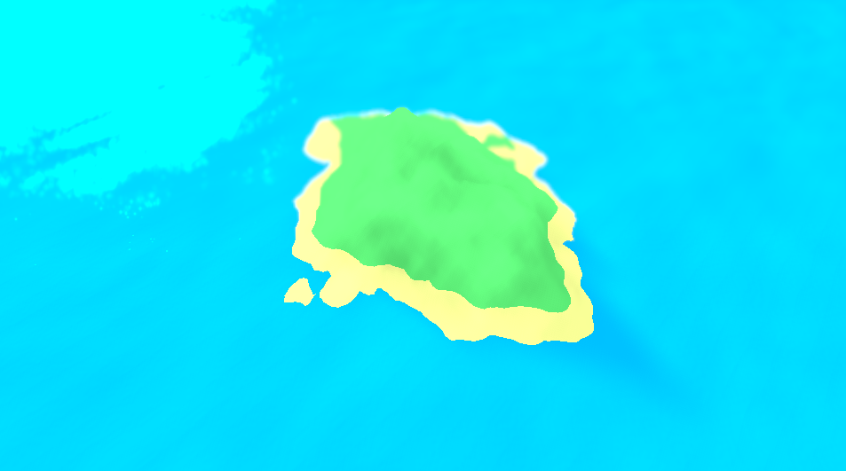
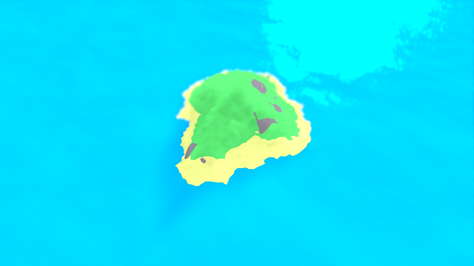
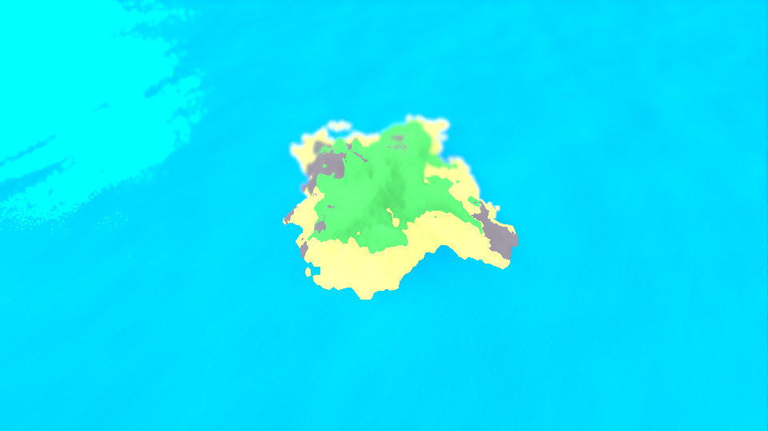

Art Idea Generator
The Github repo.
An island generator made in Godot 4.0, Alpha 1. This is a recreation of a previous island generator, which I lost when I switched to Linux. This is honestly one of my favorite things I've made, ever. Here are some examples:


The islands are a bit more varied than that, I just picked ones I liked, which are all small, cute islands.